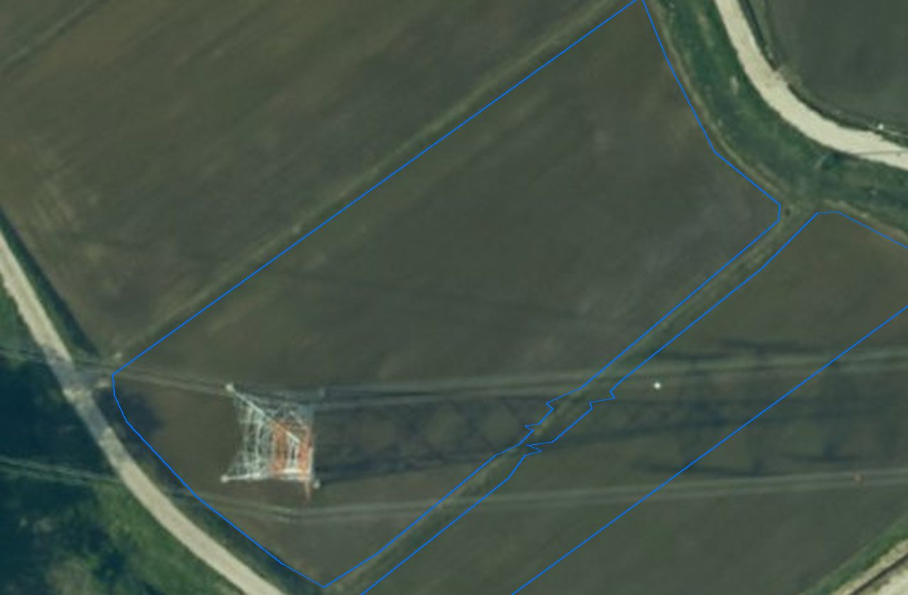
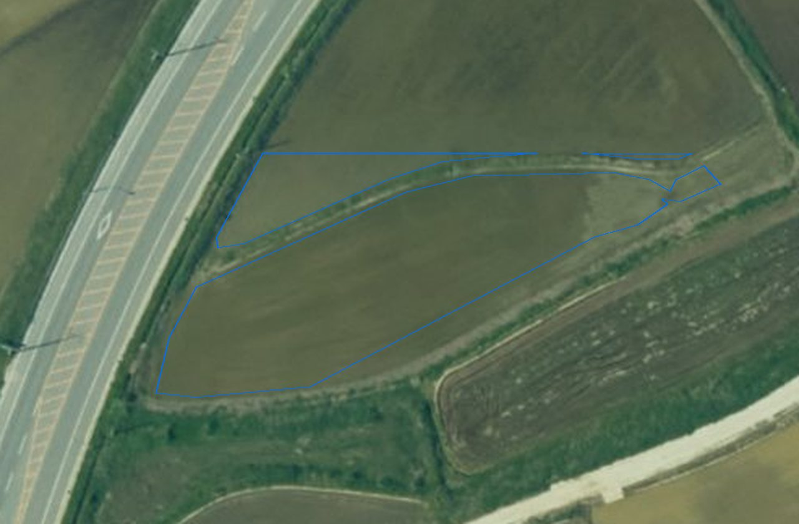
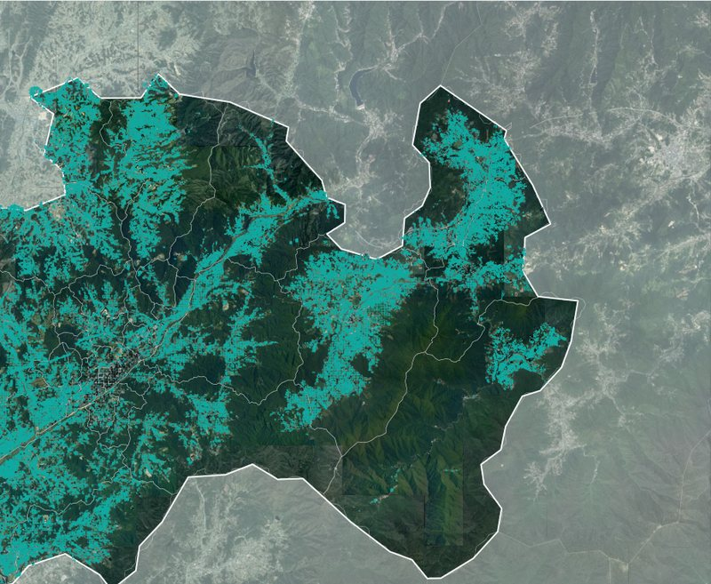
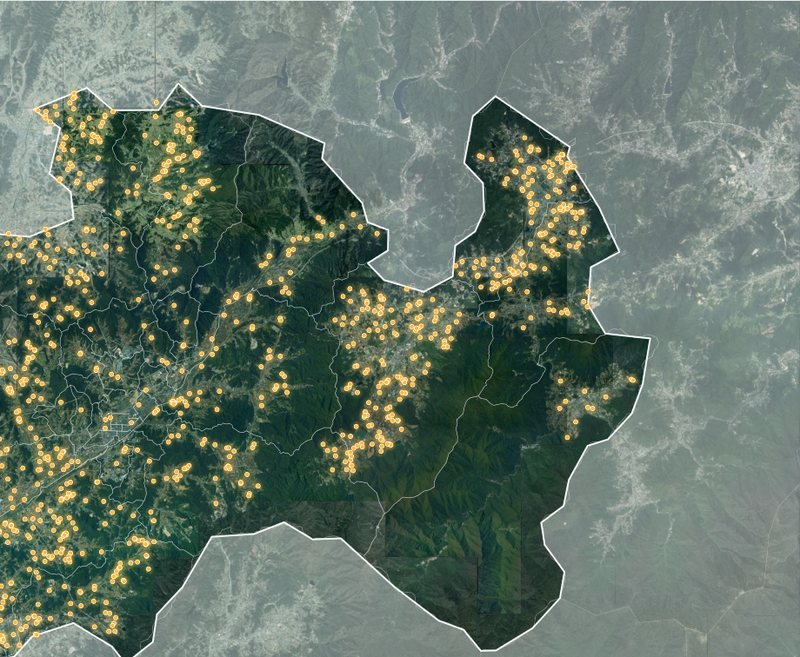

남원시 · 2026.10.01 기준v2.1
영농관리 행정서비스
경작·휴경·시설·전용을 판정해
확인할 필지만 남깁니다
29%✓AI 정확도
현장 판정 24건 기준 · 2026.09.29
332,084필지 중 현장 확인 1,035필지
- 쓰이는 곳
- 운영 1 · 시범 4
- 걸리는 시간
- 구례 전역 약 18분
이 카드로 분석자세히 →
서비스 카드를 골라 지역을 정하면 AI가 분석합니다 — 결과는 XI맵에서 봅니다


남원시 · 2026.10.01 기준v2.1
경작·휴경·시설·전용을 판정해
확인할 필지만 남깁니다
현장 판정 24건 기준 · 2026.09.29
332,084필지 중 현장 확인 1,035필지
 시범
시범증평군 외 2곳v1.0
단동·다동 비닐하우스를 찾아 셉니다
학습 때 검증 표본 기준 · 2026.09.30 · 현장 판정 전
시범 3곳 · 필지 대조 뒤 현장 확인 필지가 셉니다
 시범
시범남원시 · 2026.06.08 기준v1.0
두 시점 영상을 비교해 신축·
소실·식생 변화를 골라냅니다
20건을 확인하면 AI 정확도가 보입니다
AI 탐지 456건 · 남원시
원주시 · 2026.10.01 기준v1.0
농지 위 건물을 찾아 필지와 맞춥니다
학습 때 검증 표본 기준 · 2026.09.30 · 현장 판정 전
현장 확인 60필지 · 원주시
같은 부품 · 같은 숫자(믿을 만한 정도 · 해 주는 일) · 자리마다 배지와 아래 두 칸만 다릅니다
① 분석하기LX 직원
남원시 · 2026.10.01 기준v2.1
경작·휴경·시설·전용을 판정해
확인할 필지만 남깁니다
현장 판정 24건 기준 · 2026.09.29
332,084필지 중 현장 확인 1,035필지
② 서비스 카드 관리LX 직원 · 담당 · 관리자
남원시 · 2026.10.01 기준공개됨
경작·휴경·시설·전용을 판정해
확인할 필지만 남깁니다
현장 판정 24건 기준 · 2026.09.29
332,084필지 중 현장 확인 1,035필지
③ 기관 서비스 선택남원시 GeoVision · 기관 색
2025년 사업
농지이용 경작·비경작 · 비닐하우스 · 사료작물
우리 시 현장 판정 24건 기준 · 2026.09.29
332,084필지 중 현장 확인 1,035필지
④ 기관 2차 서비스기관 공간 · 모양 확인용예시
2026년부터 · 남원시
영농관리 결과를 해마다 겹쳐
바뀐 필지를 봅니다
입력영농관리 2026.10.01 결과입력 결과의 AI 정확도 29% ✓ · 현장 판정 24건
1차 결과가 갱신되면 이 서비스도 갱신됩니다
남원시 · 서버 값 2026.10.01 · 로그인해 찍은 XI맵 그대로(AI 분석 층 / 현장 확인 필요 · 지적선 층)

결합 전
결합 후탐지형 서비스 — 해양쓰레기 · 도로 · 인파 · 국토 변화 · 해외
필지 대조 서비스 — 영농관리 · 건축물 · 곤포사일리지 · 주차장
기관 화면 '행정정보와 결합해 비교 분석' — 농정과 농지대장 등
| 종류 | 대상 | 요청자 | 요청일 ↓ |
|---|---|---|---|
| 분석 의뢰 | 광주전남특별시 · 영농관리 | 담당자 · 광주전남특별시 | 2026.10.01 |
| 배포 승인 | 키르기스 농업부 농지 이용 실태 분석 | — | 2026.09.26 |
| 배포 승인 | 남원시 도로 안전관리 | — | 2026.09.26 |